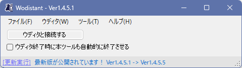

【ウディタに便利な機能を追加するツール Wodistant】
『Wodistant(ウディスタント)』はWOLF RPGエディターに便利な機能を追加するツールです！
「コモンイベントの高速一括検索機能」や「全体マップ撮影機能」
「ゲーム中30秒さかのぼり動画確認機能」、
「ブラウザウディタ用のテストプレイ機能（ローカルサーバー）」など
本体側でサポートできない様々なことが行えます！
（一部、本体側にも搭載できそうなものは取り入れさせていただいております！
様々な便利機能搭載のきっかけはこのツールのおかげなのです！）
素晴らしいツールを作ってくださったK-Shin07様、誠にありがとうございます！
・「Wodistant公式ページ」
https://alpha-stella.com/tool/wodistant/ （配布ページ）
[使い方] （ソフトをダウンロードして解凍した後の操作）
1．あらかじめウディタを起動しておく。
2．「Wodistant.exe」を実行すると以下のメニューが開きます。
「ウディタと接続する」ボタンをクリックすると、起動中のウディタが1つなら自動で接続してくれます。
【メニュー画面】 なんとワンボタンでオンラインアップデートもできて非常に便利です！

3．接続が完了すれば、以下のような様々な便利機能が使えるようになります！
●メニューの「ウディタ」→「全体マップ撮影」から、なんとマップを画像で出力できます！
全体レイヤー撮影はもちろん、1レイヤーごとに撮影したり、
イベント画像も含めて撮影したりもできるので、
画像で1レイヤー分を代替したいときや、自分で攻略記事を書くときにも非常に便利です！
●テストプレイ中いつでも、Ctrl+Mを押すと30秒前までさかのぼって
直前の映像を確認することができます！
1フレームごとの状況を見直したいようなバグ取りにおいても非常に便利です！
●メニューの「ツール」から「ブラウザウディタ起動用ローカルサーバー」を選ぶと
開かれるウィンドウ内に色々指定することでブラウザウディタのテスト実行ができます！
●メニューの「ウディタ」→「コモン」→「コモンイベント呼び出しツリー分析」で
どういう風にコモンが呼び出されているか見られるのでデバッグで困ったときに便利！
●メニューの「ウディタ」→「コモン」→「コモンイベントバグチェッカー」なんてのも！
詳しい解説付きで何が悪いかを教えてくれます。
●メニューの「ウディタ」→「コモン」→「バージョン移行補助機能」も便利！
新たに付いた便利設定に書き換える際にチェック漏れがなくなります！
（たとえばDBのデータ名指定で「別DBのタイプ番号」でなく「別DBのタイプ『名』」を
選べるようになったので、それに全切り替えする際の切り替え漏れチェックができます）
●コモンイベント内でF2キーを押すとすぐコメント文入力ができます。
などなど！
その他の詳しい機能紹介はWodistantの機能説明書にも載ってますよ！
|